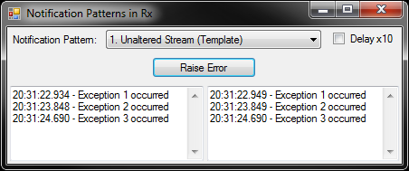

In this and the next few blog posts I’m going to be going over some examples of how to use Rx to help distribute notifications. I’ve posted all the source code on GitHub. Before we get to the actual examples of managing notifications, this post will cover the preamble of the basic framework of the example program and how to create a stream of data to work with. This first example doesn’t do anything fancy with the data (yet), it is just feeding data into an IObservable to work with later.
The Demo Application
I’ve chosen to have the demo program be a simple windows desktop application. I could have done this with unit tests, but I think the demonstration works better with a visual GUI. It is interactive so you can control when the buttons are clicked.
The form has a button to raise events. These examples are for Notification Patterns, therefore the data on the event stream will Exception objects. Each exception will include an ID number so that you can easily trace through the order of events.
The form has two scrolling TextBox controls. The one of the left reports the raw stream; every time the button is clicked a log message is added to the left TextBox. The right TextBox reports the aggregated or filtered notifications. Due to the anti-spam Rx filters we will be applying, the right TextBox should only display a subset or aggregate of the events displayed on the right.

I reuse the same form for all 6 examples in the blog post series. Each example is encapsulated in a user control, which gets loaded on the main form when you choose an example from the ComboBox at the top. To maximize code reuse and provide a common interface, each example control inherits from a common base class (NotificationPattern), which derives from UserControl. This base class supports: a PatternName (which is displayed in the ComboBox), events to pipe a message to the left (raw) TextBox or the right (notification) TextBox, ensures the Subscribe method gets called when the control is loaded, a Dispose method to unsubscribe at shutdown, and a sequence number to feed into the Exception objects on the Event stream.
Each user control example has its own buttons, which will feed data onto the event stream. Some examples have more that one button.
Some examples also include a delay or time boxing. Most examples limit spam so that Notifications are only reported at most once every 2 seconds. Two seconds isn’t exactly a good anti-spam limit, but for this for the purpose of this demo it works quite well. However if you want a more realistic example, the “Delay x10” CheckBox increases these time spans in order to slow down the demonstration.
Creating a Stream
So the first example pushes a NumberedException object onto the event stream. NumberedException is a simple custom Exception, which adds an ID number to the Exception class. Here is the code behind the “Raise Error” button.
private void btnRaise_Click(object sender, EventArgs e)
{
try
{
throw new NumberedException(NextEventID())
}
catch (NumberedException ex)
{
_exceptionStream.OnNext(ex)
}
}
The NextEventID method is from the base class and just returns a sequential number for the Exceptions.
The exception object is pushed onto the event stream using the OnNext method. The _exceptionStream variable represents the event stream. But what’s that, you ask?
private Subject<NumberedException> _exceptionStream;
The exception stream is of type Subject. This is a type defined in the Rx libraries. Subject implements the IObservable interface. This is analogous to how the List class implements the IEnumerable interface. The Subject.OnNext method is analogous to the List.Add method. OnNext is specific to the Subject and not defined for IObservable. This is just like IEnumerable does not have an Add method, although the List does.
The Subject class is just one way to create an IObservable. There are other ways to do this. The Observable class has a variety of static methods to create simple test streams. There is also the FromEventPattern sequence to create an IObservable from a standard event. The Task class has an ToObservable method. To keep things simple, in these blog posts I will only be using the Subject class to create event streams.
Subscribing to the Stream
Now that we have a stream of events, we can subscribe to this stream in order to route these events to the TextBox controls. Here is the Subscribe method of the example user control:
protected override IDisposable Subscribe()
{
_exceptionStream = new Subject<NumberedException>();
return _exceptionStream
.Do((NumberedException ex) => OnRawMessage(ex.Message))
.Subscribe((NumberedException ex) => OnNotificationMessage(ex.Message));
}
The example user control’s Subscribe method is called by the main form when the example user control is loaded. This initialization function creates the Subject object. It then calls the IObservable Do and Subscribe methods.
The Do method is a way to inject side effects into the stream of events. You can think of the Do method like the Select LINQ method that always returns the same thing, or the Where method that always returns true. In addition to just passing along events on the stream, it also can take action on those events.
In this example, and all examples in these blog posts, the Do method is the first method called and it will raise the RawMessage event, which writes the message to the left (raw) TextBox on the main form. This ensures that every button click is shown in the user interface.
Similar to the fluent API of LINQ methods, the Do method takes an IObservable and returns an IObservable. This provides the same fluent chaining style of method calls that LINQ has with its various IEnumerable methods.
The last method called in the IObservable.Subscribe method. This method takes a lambda expression that defines the final action to be taken on the event stream. In all examples in these blog posts the lambda passed to the subscribe method will route the Exception object to the Notification TextBox on the right of the main form. In a real world application this lambda would send out a notification email or SMS text message.
IObservable.Subscribe is a terminus method, in the same way that ToArray or ToList are terminus methods in LINQ. The Do method, like Select and Where, has delayed execution and would not be called until a terminus method is called.
Subscribe does not return an IObservable, instead it returns an IDisposable. There isn’t an explicit Unsubscribe method. To unsubscribe simply call Dispose on the value returned from the Subscribe method.
So in summary, the IObservable.Subscribe method wires up the given lambda expression to the data passed to the Subject.OnNext method. I’m not going to be covering this in these posts, but just for completeness I want to note that the Subject class also has an OnError and OnCompleted methods. Similar to how a classic I/O stream has Standard Output and Standard Error streams, the IObservable and Subject classes also have these concepts. The Subscribe method can take a second lambda to process this secondary error stream. OnCompleted gets called when no other events will be sent down the stream. Its kind of like an end of file indicator. This event can also be handled from the Subscribe method.
Manipulating the Stream
I know I said I wasn’t going to do this, but I’ll show a few examples of how to manipulate the stream. This unaltered stream example is a good starting point to start messing around with Rx functions and see what they do.
The first example is to add a Where function, which is also in LINQ, to filter the event stream to only show the Exceptions with an odd ID number. I’ve also removed some of the redundant typing off the lambda expressions. The OnRawMessage and OnNotificationMessage functions support an overloaded version that takes an Exception instead of a string, so in fact the lambdas are completely unnecessary.
return _exceptionStream
.Do(OnRawMessage)
.Where(ex => ex.ID % 2 == 1)
.Subscribe(OnNotificationMessage);
In a final example I will use the Rx Delay method to simply delay the notifications by a couple seconds. As promised, Rx can be used to manipulate time.
The Delay method will implicitly shunt the stream to another thread. This is a side effect the Delay method must introduce in order to allow it to control time.
In order to successfully write the final message to the Notification TextBox, the thread must re-join the UI thread. This can be easily done by calling the ObserveOn method, passing in the user control that supports the Invoke method. Rx can control threads just as easily as time or data.
return _exceptionStream
.Do(OnRawMessage)
.Where(ex => ex.ID % 2 == 1)
.Delay(TimeSpanFactory.FromSeconds(2))
.ObserveOn(this)
.Subscribe(OnNotificationMessage);
These are two quick examples to show how to manipulate the stream before it is subscribed to. In the next post I’ll show a real world notification pattern of buffering exceptions to reduce spam whilst still capturing all data.